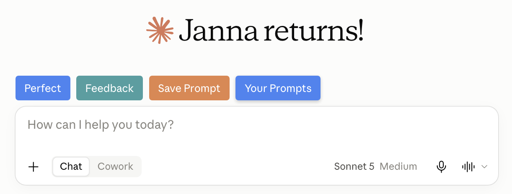
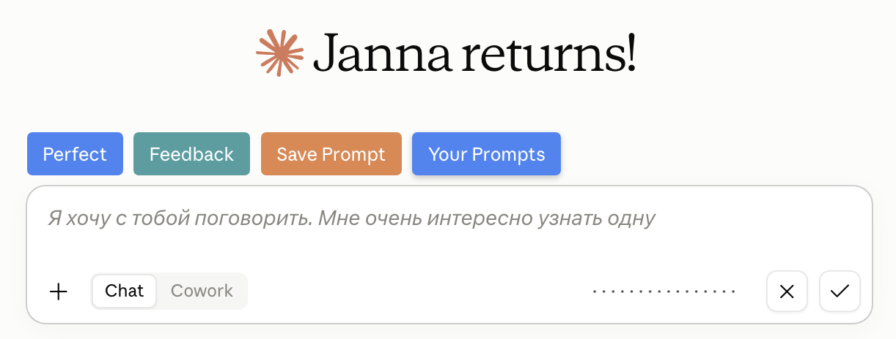
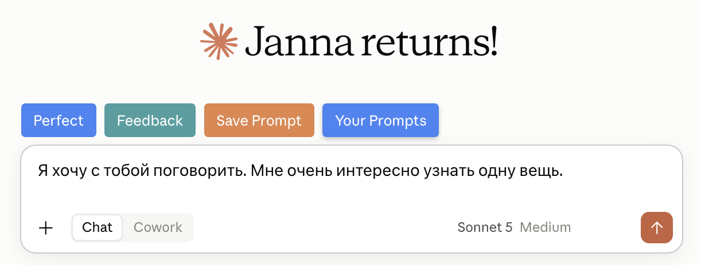
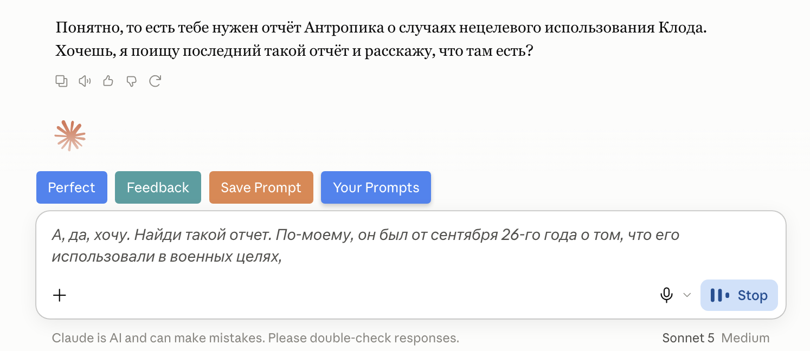
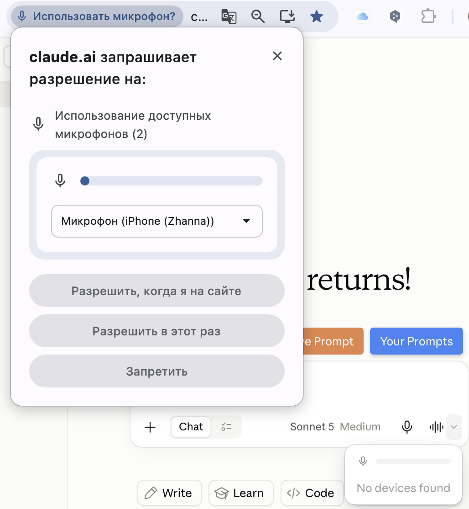
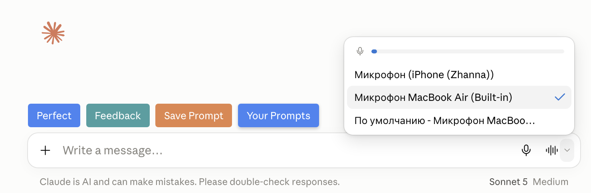

Claude.ai · Dictate и Voice mode
Голосовой ввод в Claude: Dictate, Voice mode и выбор микрофона
Мысль в голове уже сформировалась целиком. Открываешь чат, ставишь руки на клавиатуру, и к третьему предложению уже лень набирать, поэтому вместо задуманного получается короче и суше. А под строкой чата всё это время ждут два значка, про которые никто не рассказывал: микрофон и волна
Если ты ещё не вошёл в Claude, сначала пройди «Claude из России: подключение без блокировок». Там доступ и первый чат, а сюда вернёшься за голосовым вводом
Почему это стоит включить
Зачем вообще говорить, а не печатать
Печатать долго не потому, что ты медленно печатаешь. Пока набираешь длинный запрос, включается внутренний редактор: половину подробностей выкидываешь просто чтобы не набирать, и Claude получает обрубленную задачу вместо той, что была в голове
Вслух этого не происходит. За минуту наговаривается столько, сколько печатаешь пять, и остаются все детали: для кого текст, что уже пробовал, чего делать не надо. Чем подробнее задача, тем точнее ответ, поэтому голос заметнее всего выигрывает как раз на длинных запросах
Где это особенно заметно: рассказать про свой проект, продиктовать письмо целиком, объяснить сложную ситуацию с клиентом, надиктовать черновик поста по дороге
Сначала найди кнопки
Два значка, которые ты не замечаешь
Открой Claude и посмотри на строку, куда обычно пишешь сообщение. Справа в ней стоят два значка рядом, и это разные вещи, хотя оба про голос

Запомнить просто: микрофон - ты говоришь, Claude пишет. Волна - ты говоришь, Claude отвечает голосом
Режим первый
Dictate: продиктовать вместо того, чтобы печатать
Задача длинная, объяснять надо много, а печатать не хочется. Тебе нужен обычный текстовый ответ, который потом надо посмотреть и отредактировать - просто наговорить его быстрее
1. Нажми на микрофон
Нажми значок микрофона справа в строке ввода. В первый раз браузер спросит разрешение на микрофон, ответь Разрешить, когда я на сайте, иначе запись не начнётся
Результат: вместо обычной строки появилась полоска записи, Claude слушает
2. Говори обычным голосом
Говори так же, как объяснял бы человеку, не диктуй по словам. Слова появляются прямо в строке по ходу речи, поэтому видно, что распознаётся правильно

Результат: сказанное видно текстом и его можно проверить до отправки
3. Оставь текст или сотри
Галочка оставляет надиктованное в строке, крестик стирает и даёт сказать заново. После галочки текст обычный: его можно дописать руками, поправить слово и отправить стрелкой, как будто набрал руками

Результат: Claude отвечает текстом на то, что ты наговорил
Режим второй
Voice mode: разговор вслух
Бывает наоборот: формулировки ещё нет, ты только думаешь вслух и хочешь, чтобы тебя переспросили. Тогда печатать нечего, нужен разговор
1. Нажми на волну
Нажми значок звуковой волны рядом с микрофоном. Claude переходит в режим разговора: он слушает и отвечает голосом
Результат: в правом нижнем углу окна чата появилась кнопка Stop - значит разговор идёт
2. Говори и слушай ответ
Просто начинай говорить, Claude отвечает на паузе в речи. Можно перебивать, уточнять и спорить, как в обычном разговоре. Твои слова при этом всё равно видны текстом в строке, а ответ Claude остаётся в чате

Результат: получается диалог, а не переписка
3. Заверши разговор кнопкой Stop
Claude остаётся в голосовом режиме, пока не нажмёшь Stop в правом нижнем углу окна чата. Весь разговор сохраняется в истории чатов текстом, как обычная переписка, поэтому к нему можно вернуться и перечитать
Результат: режим выключен, в истории лежит текстовая расшифровка разговора
Выбери голос, который приятно слушать
Голос, которым Claude отвечает, меняется. Если стандартный раздражает или звучит слишком быстро, это не повод бросать режим: открой Settings → General и пролистай до Voice settings. При нажатии на вариант играет короткое превью, повторное нажатие его останавливает
На телефоне то же самое лежит внутри самого разговора: кнопка настроек в левом нижнем углу, там же выбирается голос и темп речи
Результат: Claude говорит голосом и в темпе, которые тебе удобно слушать
Про лимит: голосовые разговоры расходуют тот же лимит, что и обычная переписка, отдельного голосового лимита нет
Развилка
Что выбрать: продиктовать или поговорить
Оба режима про голос, и легко застрять на выборе. Разница простая: тебе нужен готовый текст или тебе нужен собеседник
Бери Dictate
- задача уже сложилась в голове, надо её просто изложить
- нужен текст, который потом читаешь и правишь глазами
- рядом люди и слушать ответ вслух неудобно
- диктуешь письмо, пост или длинное описание проекта
Бери Voice mode
- думаешь вслух и точной формулировки ещё нет
- хочется, чтобы переспросили и помогли додумать
- руки заняты: идёшь, готовишь, ведёшь машину
- разбираешь ситуацию, а не диктуешь готовое
Если не работает
Микрофон не находится: что делать
Нажимаешь микрофон, а вместо записи пусто или надпись No devices found. Выглядит так, будто сломался Claude, но почти всегда дело в двух вещах: браузер не пустил к микрофону или слушает не то устройство
Дай браузеру разрешение
Разрешение на микрофон спрашивает браузер, а не Claude. Окошко появляется вверху слева, у адресной строки. Нажми Разрешить, когда я на сайте, чтобы не отвечать на этот вопрос каждый раз

Результат: claude.ai получил доступ к микрофону, полоска уровня звука ожила
Выбери нужное устройство
Нажми маленькую стрелку справа от значка волны. Откроется список подключённых микрофонов: встроенный в ноутбук, телефон, гарнитура. Галочка стоит на том, который слушает сейчас, нажатием её можно перенести на другой

Результат: выбран микрофон, который реально тебя слышит
Быстрая проверка: скажи пару слов и смотри на полоску уровня над списком. Не шевелится - дело в микрофоне или разрешении, а не в Claude
Можно копировать
Что говорить, чтобы получилось хорошо
Первые разы голосом получается каша: мысль скачет, Claude отвечает не туда. Помогает начать с одной фразы, которая сразу объясняет, что ты сейчас делаешь
Наговариваю задачу как есть
Я сейчас наговорю задачу вслух, поэтому будет сбивчиво и с повторами. Не отвечай сразу: сначала собери из моей речи понятную задачу и покажи её списком, а я поправлю
Думаю вслух, помоги додумать
Я думаю вслух и точного решения пока нет. Задавай по одному короткому вопросу и веди меня к решению, не выдавай сразу длинный ответ
Продиктовал текст, приведи в порядок
Это надиктованный текст, в нём есть оговорки и слова-паразиты. Приведи его в чистый вид, сохрани мои формулировки и порядок мыслей, ничего не добавляй от себя
Короткие ответы
Частые вопросы
Вопросы, которые возникают в первые же дни, когда начинаешь пользоваться голосом каждый день
Понимает ли Claude русский
Да, русский язык в списке поддерживаемых для голосового ввода. Голосу можно задать свой язык отдельно от языка интерфейса: Settings → General → Voice → Language
Куда девается запись моего голоса
После того как речь превращена в текст, аудиозапись удаляется. В истории чата остаётся текст разговора, как обычная переписка
Нужен ли платный тариф
Голосовой режим работает на всех тарифах, включая бесплатный. Разговоры расходуют общий лимит, отдельного голосового лимита нет
Откуда факты
Источники
- Claude Help Center: Use voice mode - кнопка волны, завершение по Stop, тарифы, расход лимита, выбор голоса в Voice settings, язык голоса и сохранение расшифровки
- Claude Help Center: Use dictation - как работает диктовка, список языков и удаление аудиозаписи
Бесплатный практикум
Научись собирать своё, а не только жать кнопки
ИИ-Лагерь - это бесплатный прикладной практикум. Там ты научишься работать с Claude Code и Codex, а не только переключать рычажки голосового режима. Каждый шаг показывают на экране: повторяешь и собираешь полезное для себя и своего бизнеса, без кода и технических знаний, хоть голосом
Хочу на бесплатный практикум